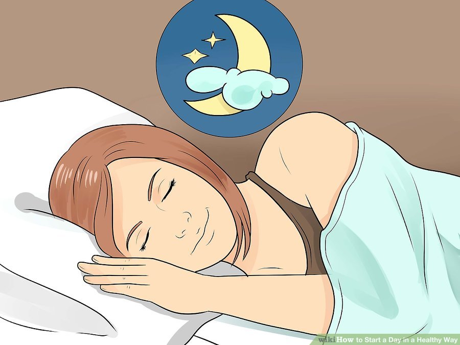

1. Develop a morning routine. If you don't have much structure to your mornings, make a plan to change that. Having a good morning routine can help you to wake up feeling like you have a direction and purpose. If your morning routine has not been working out for you, make a plan to change the way you wake up and start your day.
2. Get a good night's sleep. Sleep deprivation can cause a wide range of health problems, so it's important to make sure that you are getting enough sleep every night. Your sleep needs are based on your age as well as other factors. For example, adults need between 7-8 hours of sleep per night, but if you have been sleep deprived for a while, you may require more until your body recovers.
3. Stretch as soon as you wake up. You might instinctively stretch in the morning, but if not it's a good habit to incorporate. You don't have to spend much time stretching to reap the energizing benefits. Even 30 seconds of stretching can help get your day off to a healthy start.
4. Excercise in the morning. Morning exercise is a great way to get your day off to a healthy start. You should aim for 30 minutes of exercise every day, but even 15 minutes of exercise in the morning can help you to feel more energized and healthy all day. Some research has even found that morning exercise helps improve sleep and getting enough sleep is essential to having a healthy start to your morning.
5. Take a morning shower. Getting up and hopping in the shower first thing in the morning can help you to feel more alert, but it can also help start your day on a more relaxing and pleasant note. Use body wash and other products that smell nice and allow yourself plenty of time for a luxurious shower.
6. Eat a good breakfast. To have a healthy start to your day, breakfast is a must. Eating a healthy breakfast every day has been show to help people maintain a healthy weight, have more strength and endurance, and concentrate better on difficult tasks. Make sure that you are eating a breakfast that includes complex carbohydrates, fruit, and some lean protein.
7. Drink water. Proper hydration is important for your body to function well. Drinking water helps with digestion, metabolism, skin and muscle health, and kidney function. After a night of sleeping and perspiring, your body needs to be rehydrated. Drink a glass of water as part of your morning routine and fill a water bottle to bring with you when you head to work or school.
1. Improve your bedtime habits. Getting a good’s night sleep is not always easy, but you can make it better by working to improve your bedtime habits. Consider your usual evening routine and think about what might be preventing you from getting a good night’s sleep. Do you drink caffeinated beverages late in the day? Do you have hard time relaxing at night? Use the following suggestions to help you improve your bedtime habits.
2. Go to bed and wake up at the same time every day. Having a consistent sleeping and waking times are essential to starting your day in a healthy way. If your bedtimes and wake up times are erratic, try to correct the problem by setting a regular bedtime and wake-up time that you can stick to. Also, make sure that you will give yourself enough time to get your recommended amount of sleep every night. For example, if you need to be at work by 8am every morning, you may need to wake up by 6:30 to have enough time to get ready and get to work on time. Therefore, you should go to bed no later than 10:30pm every night to get the right amount of sleep.
3. Wake up gently. A jarring alarm clock may be getting your day off to a stressful start. If your alarm clock stresses you out, try using an alarm clock that wakes you up with a progressive sound or that uses light instead of sound to wake you up. There are even some apps for smartphones that can help you to wake up gently rather than with a loud, jarring alarm sound.
4. Set a positive tone for your day. Sometimes getting up early is enough to put someone in a bad mood and set a negative tone for the entire day. Setting aside a few minutes every morning to focus on positive things can help get your day off to a better start. Avoid watching the news or reading about things that will upset you first thing in the morning.
1. Give yourself plenty of time. Having to rush around to get ready in the morning does not start your day on a good note. In fact, you may end up having extra stress first thing in the morning because you have to rush. If you often find yourself rushing or running late, you may need to start waking up a bit earlier to give yourself more time to get ready. Try setting your alarm for 15 minutes before your normal wake-up time to see how it changes your morning routine.
2. Connect with family or friends. Even if you are in a hurry in the morning, taking a few moments to connect with your family or friends can help get your day off to a great start. Simply taking a second to give your family members a hug and say “I love you,” or tell your roommate to have a good day can be beneficial. A twenty second hug in the morning can help your body to release dopamine and oxytocin, which will make you feel good and help relieve stress.
3. Work on an important project. Your brain is more capable of handling difficult tasks first thing in the morning, so it’s best to use your early morning time to focus on important projects, rather than on menial tasks like answering emails. You are also less likely to be interrupted by your loved ones or coworkers early in the morning. As the day goes on, you can shift to working on things that are easier or less important.
4. Meditate or pray. In order to have a relaxing start to your day, you may need to set aside some time to meditate or pray. Taking about 5-10 minutes to sit quietly with your thoughts and breathe will help set a relaxing tone for your day. If you have a lot on your plate, taking time to meditate or pray can also help to alleviate some of your stress and anxiety about being able to complete everything.